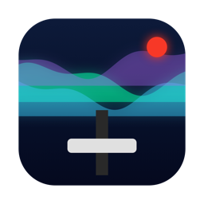
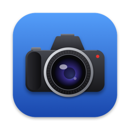
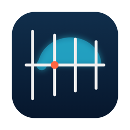
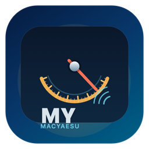
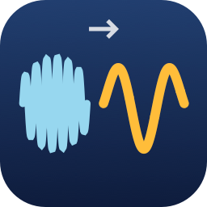
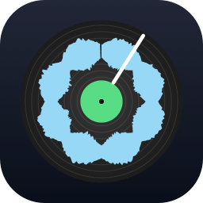
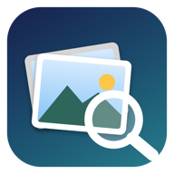
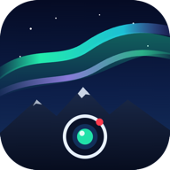

Aurora Studio
Live-Bildmischer, Tonpult, Sendeziele, Aufnahme, Visuals und Shorts für den Livestream auf dem Mac.
Aktuelle Fassungen für Mac, iPhone/iPad und Android, alle als Vollversion.

Live-Bildmischer, Tonpult, Sendeziele, Aufnahme, Visuals und Shorts für den Livestream auf dem Mac.

Lädt von der per USB angeschlossenen Kamera nur die Fotos und Videos, die im Zielordner noch fehlen – auf den Mac oder per SFTP.

NEC-Antennensimulation mit 3D-Ansicht, Strahlungsdiagramm, Frequenzgang und Optimierer (Kerne nec2c und momwire).

Steuerung des Yaesu FT-991A per USB vom Mac: Frequenz, Modus, PTT, Speicher, Logbuch und Audio.

Extreme Zeitdehnung von Audio (Faktor 1 bis 1000) mit Sinusmodell, Paulstretch und Phase-Vocoder, Vergleich mit Kennzahlen.

Vier Schleifenspieler als Plattenteller: Klick nimmt auf und spielt im Loop, Wellenform oder Spektrum im Ring, Schnalzen setzt das Tempo, Metronom, je Spur Lautstärke und Delay oder Hall.
Familien koordinieren die Betreuung alternder Eltern: Termine, Medikamente, Vollmachten, Arztberichte, Notfallblatt. Deutsch, Englisch, Französisch.

Fotoarchiv mit KI-Suche ohne Cloud: „Katze auf dem Sofa 2019“. Alles bleibt auf dem Gerät. Deutsch, Englisch, Französisch.
Mietzinssenkung, Mieterhöhung und Nebenkosten nach Schweizer Mietrecht nachrechnen, Brief als PDF. Deutsch, Französisch, Italienisch, Englisch.
NEC-Antennensimulation auf dem iPhone: 3D, Diagramme, Regler, Frequenzgang, Optimierer (nec2c eingebaut).
Extreme Zeitdehnung von Audio auf dem iPhone, drei Verfahren im Vergleich, eingebaute Beispielklänge.

Livebild der Aurora-Kamera Oberdürnten, Zeitraffer, Ereignisse und Wetter auf dem iPhone. Sechs Sprachen.
Betreuung alternder Eltern in der Familie koordinieren, auf dem iPhone.
Fotoarchiv mit lokaler KI-Suche auf dem iPhone, mit Apple Intelligence, wo verfügbar.
Schweizer Mietrecht auf dem iPhone: Senkung, Erhöhung, Nebenkosten prüfen und Brief erstellen.
Betreuung alternder Eltern in der Familie koordinieren, auf Android. Gleiches Datenformat wie Mac und iPhone.
Livebild der Aurora-Kamera Oberdürnten, Zeitraffer, Ereignisse, Widget. Sechs Sprachen.
Klänge extrem dehnen (Paulstretch, Phase-Vocoder, Sinusmodell) und die Verfahren vergleichen, auf Android. Rechnet gleich wie die Mac-Fassung; je Lauf bis 30 s, auf kleinen Geräten 15 s.
Antennen mit NEC-2 simulieren: 3D-Modell, Richtdiagramme, SWR, Smith-Diagramm, Optimierer, Live-Regler. Rechenkern nec2c (GPLv3) wie auf Mac und iPhone, Ergebnisse zahlengleich.
Fotos von der Kamera per USB-Kabel (OTG) oder aus einem Ordner holen, nur Fehlendes, Ablage nach Typ und Tag, Ziel Ordner oder SFTP. Sechs Sprachen. Echte Kameras am Handy noch ungetestet.
Zukunftsgeschichten über künstliche Intelligenz in der Schweiz, 2027–2045: eine Reporterin reist durchs Land, jedes Kapitel ein anderes Jahr. Gut 100 Seiten mit Bildern, am Ende jedes Kapitels „Stand heute“.